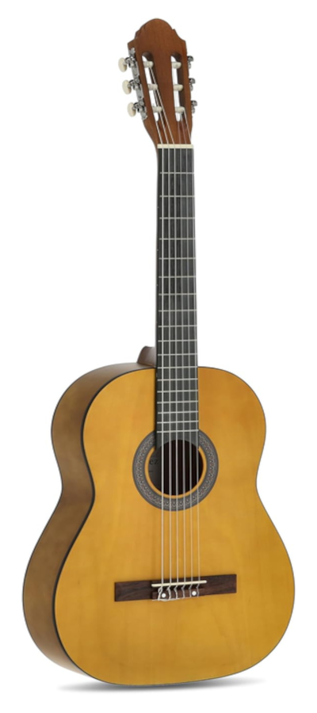
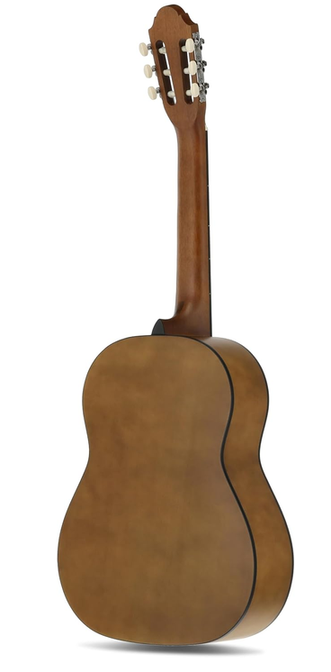

Guitarra Clásica CAROLINA - C01


Descripción
La CAROLINA C01 es una guitarra clásica de acabado natural, pensada para ofrecer una respuesta cómoda y un sonido cálido. Sus cuerdas de nylon la hacen especialmente apropiada para el aprendizaje, la interpretación clásica y el acompañamiento.
Características
| Características | Especificación |
|---|---|
| Modelo | C01 |
| Tipo | Guitarra Clásica |
| Color | Natural |
| Número de cuerdas | 6 |
| Cuerdas | Nylon |
| Acabado | Natural |